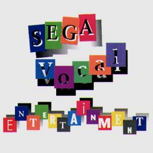
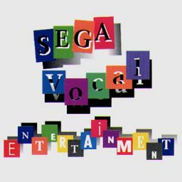

SEGA Vocal Entertainment


SEGA Vocal Entertainment

|
発売元：徳間ジャパン |
|
ゲームで使用されたヴォーカル曲を「声優さんが歌っているCD」を作ろうとしたもの。 |
|
01. Let Me Try Again ...久川綾 - 輝水晶伝説アスタル 02. DREAMS DREAMS ...井上和彦 - ナイツ 03. 未来 ...みうらうらら - ドラゴンフォース 04. TRY !!! ...川水流安紀 - ビクトリーゴールワールドワイドエディション 05. Clockwork Knight ...高乃麗 - クロックワークナイト 06. DREAMS DREAMS (Original Version) ...Jasmine Ann Allen/Cameron Earl Strother - ナイツ 07. A lullaby ...高乃麗 - クロックワークナイト 08. 輝く世界を ...久川綾 - 輝水晶伝説アスタル 09. 勇気 ...秋田まどか - ドラゴンフォース 10. 幾千の夜を越えて ...井上和彦 - ビクトリーゴール'96 |
|
・次の作品を見てみたいっす!! ・関連CD＜国内編＞のページへ ・Music CDのページへ ・Sound Web Siteのトップページへ |